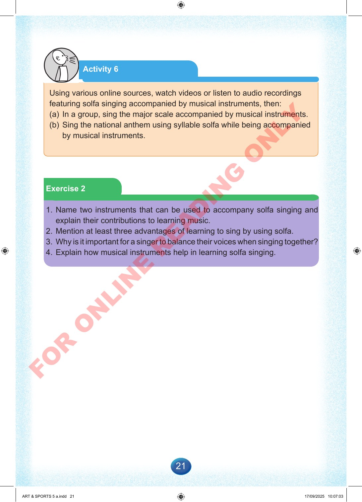

21
Activity
6
Using
various
online
sources,
watch
videos
or
listen
to
audio
recordings
featuring
solfa
singing
accompanied
by
musical
instruments,
then:
(a)
In
a
group,
sing
the
major
scale
accompanied
by
musical
instruments.
(b)
Sing
the
national
anthem
using
syllable
solfa
while
being
accompanied
by
musical
instruments.
Exercise
2
1.
Name
two
instruments
that
can
be
used
to
accompany
solfa
singing
and
explain
their
contributions
to
learning
music.
2.
Mention
at
least
three
advantages
of
learning
to
sing
by
using
solfa.
3.
Why
is
it
important
for
a
singer
to
balance
their
voices
when
singing
together?
4.
Explain
how
musical
instruments
help
in
learning
solfa
singing.
ART
&
SPORTS
5
a.indd
21
ART
&
SPORTS
5
a.indd
21
17/09/2025
10:07:03
17/09/2025
10:07:03
F
O
R
O
N
L
I
N
E
R
E
A
D
I
N
G
O
N
L
Y